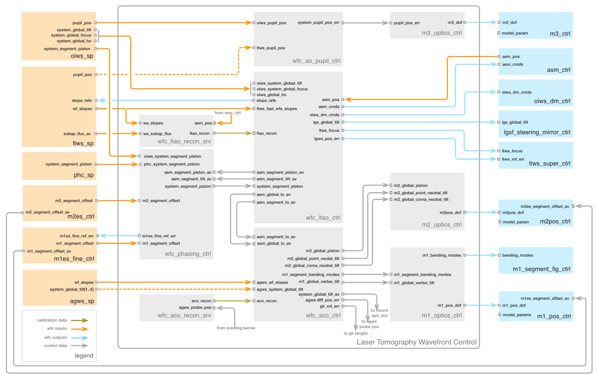
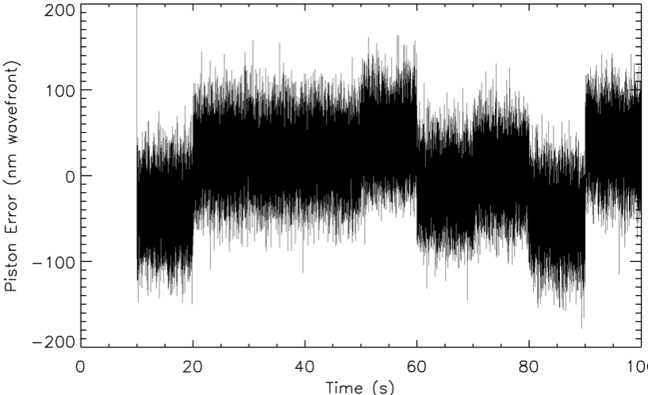

3.5.3. Laser Tomographic Adaptive Optics (LTAO)¶
A simplified block diagram of the LTAO WFC is presented in Figure 24. There are strong similarities to the NGSAO WFC, with the LTWS taking the place of the NGWS. The LTAO Wavefront Controller has three additional outputs controlling the OIWFS DM, the LTWS focus stage, and the LGSF steering mirrors. At this level of detail, the additional NGS tip-tilt and focus control loops and the details of the pseudo open-loop tomographic control are hidden within the LTAO Wavefront Controller. The Phasing Controller in the LTAO mode has additional inputs from the OIWFS, Phasing Camera, and M1 and M2 Edge Sensors. The operation of the Active Optics Wavefront Controller is identical to the NGSAO mode.
{kind=link}
Fig. 24 LTAO wavefront control system simplified block diagram
Thirteen wavefront control loops operate simultaneously in the LTAO mode, a number similar to that of present-generation state-of-the art AO system (e.g., Gemini GEMS). Eight are implemented by the LTAO Wavefront Controller based on measurements made by the LTWS and OIWFS. These are:
- High-order on-axis wavefront error, compensated with the ASM
- High-order off-axis wavefront error, compensated with the OIWFS DM
- Tip-tilt, compensated with the ASM
- Focus, compensated with the ASM
- Dynamic calibration, compensated with the ASM
- OIWFS dynamic calibration, compensated with the OIWFS DM
- Laser tip-tilt, compensated with LGSF steering mirrors
- Laser focus, used to optimize the axial position of the LTWS.
The remaining five control loops are:
- The M1 and M2 Edge Sensors, which control the relative positions of the M1 and M2 outer segments with respect to the center segments.
- The Phasing Controller, which updates the M1 edge sensor setpoints based on OIWFS and/or Phasing Camera measurements.
- The Phasing Controller, which feeds forward edge sensor segment piston measurements to the ASM via the LTAO Wavefront Controller.
- The Active Optics Wavefront Controller, which controls field-dependent aberrations based on AGWS measurements.
- The Pupil Motion Controller, which adjusts the tilt of M3 to maintain the pupil centered on the instrument.
This list does not include control loops internal to AO subsystems, such as the tip-tilt dithering on the IOPS sensor of the OIWFS. As in the NGSAO mode, there are also many offloads between controllers, some of which are described in the next section.
Component Descriptions
Figure 25 is a more detailed block diagram of the LTAO WFC, with all of the real-time components currently envisioned. A list of the components is provided in Table 10-27 [TBA]. A description of the most critical components is given below, followed by an identification of the connections between them.
Table 11 LTAO Wavefront Control System Components¶ Component Name Description Software Package wfc_ltao_ctrl LTAO Wavefront Controller wfc_ltao_pkg wfc_aco_ctrl Active Optics Controller wfc_common_pkg wfc_ao_pupil_ctrl AO Pupil Motion Controller wfc_common_pkg wfc_phasing_ctrl AO Phasing Controller wfc_common_pkg wfc_ltao_recon_srv LTAO Reconstructor Server wfc_ltao_pkg wfc_aco_recon_srv Active Optics Reconstructor Server wfc_common_pkg m1_optics_ctrl M1 Optics Controller wfc_common_pkg m2_optics_ctrl M2 Optics Controller wfc_common_pkg m3_optics_ctrl M3 Optics Controller wfc_common_pkg Fig. 25 LTAO wavefront control system detailed block diagram
{kind=link}
LTAO Wavefront Controller
The LTAO Wavefront Controller (wfc_ltao_ctrl), shown in the Figure below, implements LTAO control loops A through H. It receives input from the LTWS Slope Processor (ltws_sp), the OIWFS Slope Processor (oiws_sp), and the Phasing Controller (wfc_phasing_ctrl). The most complex function of this component is the tomographic reconstruction of the on- and off-axis wavefront error from the LTWS measurements (loops A and B), described in detail in Section 8.8.2 [Bouc13b].

Fig. 26 LTAO wavefront controller block diagram (input from the phasing controller and active optics controller are not shown). Control loops A-H are identified.
The other six control loops are comparatively simple:
- Tip-tilt is measured by the OIWFS, and added to ASM command vector at the rate at which it is measured, generally asynchronously with the tomographic reconstruction.
- Focus is measured by the OIWFS at ~10 Hz, summed with high-pass filtered on-axis tomographic focus (>10 Hz), and added to the ASM command vector.
- The main dynamic calibration loop subtracts the aberrations measured by the Truth Sensor of the OIWFS from the ASM command vector, to correct any low-order aberrations in the science focal plane (see Figure 10-30).
- A secondary dynamic calibration loop uses the Focus and Truth Sensor downstream of the OIWFS DM to remove any residual low-order aberrations from that DM.
- Laser tip-tilt is measured by the LTWS and used to update the LGSF fast steering mirror positions.
- Laser focus is derived from the tomographic reconstruction on-axis, and used to drive the LTWS focus stage at 10 Hz.

Fig. 27 Detail of the LTAO dynamic calibration control loops
The other key inputs to the wfc_ltao_ctrl component are the segment piston error fed forward by the Phasing Controller from the M1 and M2 edge sensors, and field-dependent aberration compensation from the Active Optics Wavefront Controller. Both of these are added to the ASM command vector before it is sent to the ASM Controller.
In order to implement pseudo open-loop control, the wfc_ltao_ctrl component must also be given the actuator position after the previous step by the ASM. Commands sent to the ASM are then in terms of absolute actuator position.
The slow offloads from the wfc_ltao_ctrl component are identical to those in the NGSAO mode. The input and output ports of the wfc_ltao_ctrl component are listed in Table 10-28 [TBA].
Active Optics Wavefront Controller (LTAO mode)
The Active Optics Wavefront Controller is identical in the LTAO mode as in the NGSAO mode.
AO Phasing Controller (LTAO Mode)
The Phasing Controller (wfc_phasing_ctrl) in the LTAO mode provides updates to the M1 edge sensor control points, and feeds forward the sum of the M1 and M2 reconstructed segment piston to the LTAO Wavefront Controller. These control loops are illustrated in Figure 28. The LTAO functions are a superset of the NGSAO functions, so they have been designed as a single component, using a different set of ports in each mode. These are identified in Table 10-26 [TBA].
As in the NGSAO mode, the relative position and tilt of the M1 and M2 segments is controlled at low bandwidth (<1 Hz) by the M1 and M2 edge sensors in closed loop with the M1 and M2 segment positioners. Any slow drift in the M1 edge sensors will be observed as a segment piston error with the OIWFS (every 1-10 s) or the Phasing Camera (every 30-60 s). The measured segment piston is added to the time-average segment piston and tilt on the ASM actuators. In theory the ASM segment piston should be zero-mean, but it does not hurt to include this “escape valve” for any piston which builds up there. The M1 edge sensor setpoints will be updated after every OIWFS or phasing camera measurement (with a modest integrator gain g < 0.5) to maintain zero average system segment piston.
The wfc_phasing_ctrl component will also sum the M1 and M2 edge sensor measurements, and feed forward the segment piston component to the LTAO Wavefront Controller at 500 Hz. This allows the ASM to compensate for wind disturbances or vibrations at up to ~70 Hz.

Fig. 28 LTAO Phasing Controller Block Diagram. Other software components are shown with dashed lines. Control loops I-K are identified.
LTAO Reconstructor Server
The LTAO Reconstructor Server (wfc_ltao_recon_srv) is another key component in this mode. Its relationship to other components is illustrated in Figure Figure 24.
The LTAO wavefront reconstructor matrices A and B (see Section 8.8.2.3 [Bouc13b]) depend on the atmosphere parameters: r0, L0 and the Cn2 profile. The values of these parameters evolve with time so the matrices must be recomputed every ~60 s. The r0 is a scaling factor and does not require a new computation of the matrices, but changes in Cn2 and the L0 do.
Both r0 and L0 can be derived from the statistical moments of the pseudo-open loop slopes. Full frame rate, pseudo-open loop slope vectors must be used. Tip-tilt and focus will be removed from the slopes before computing their variance, covariance, and structure function. Model fitting to the statistical moments will lead to the estimates of the r0 and L0. The Cn2 profile will be derived with a SLODAR-like method [Wils02] using the cross-correlation of the tip-tilt and focus filtered pseudo-open loop slopes between the different LTWS cameras.
Reconstructor matrices A and B are computed by matrix inversion using these atmospheric parameters. This requires significant computing power, similar to that necessary for the real-time tomography (see Section 8.8.4 [Bouc13b]).
The wfc_ltao_recon_srv component must also update the noise covariance matrix. This matrix depends on the read-out noise, the total flux per subaperture, and the LGS spot elongation. The maximum intensity per subaperture is a good indicator of the spot elongation and it will be used to discard subapertures on the fly when its flux falls below a threshold.
The input and output ports of the wfc_ltao_recon_srv component are listed in Table 10-29 [TBA].
Simulations
As for the NGSAO mode, no complete simulations of the LTAO wavefront control system with all of the control loops presented in this section have yet been performed. However, the following simulations demonstrate critical aspects of the control system:
- The LTAO end-to-end performance simulations described in Section 8.9.2 include tomographic control of both the ASM and OIWFS DM, and NGS tip-tilt (Loops A, B, C).
- Additional simulations reported in the LTAO System Design Manual31 include the Focus and Dynamic Calibration control loops (D and E).
- Phasing simulations described below include all of the segment piston control loops (I, J, and K).
- Active Optics Wavefront Controller simulations are described in Section 6.12.2.5 [John13].
The laser feedback control loops (G and H) have been investigated analytically in Section 4.7.4.1 of the LTAO System Design Manual [ANU13].
LTAO Phasing Simulation
A numerical simulation of the LTAO mode Phasing Controller was run to verify the performance of the control loops illustrated in Figure 29. The parameters used in the simulation are summarized in Table 10-30 [TBA]. They are based on the requirements of the various sensor and actuators in the control system, rather than the as-designed performance.
The simulation includes estimates of the mechanical and thermal drifts of the M1 and ASM Reference Body (RB) segments, the measurement error and sampling rates of all sensors, and the finite precision and slew time of the actuators. A typical time history of a single M1-M2 segment pair is shown in Figure 30. The simulation tracks the positions of the segments and the measurements made by all sensors with a time step of 1 ms.
If uncorrected, M1 and the ASM reference body are each expected to drift in piston by up to 250 nm/min (wavefront). Closed-loop control of the M1 and M2 positioners by the edge sensor system (Loop I) keeps the segments aligned to within ~1 μm. The residual piston error feed-forward loop (Loop K) causes the ASM face sheet to closely track the negative of the sum of the M1 and ASM reference body error. The sum of these three components (M1, ASM RB, and ASM face sheet) is close to zero, but includes various error contributions as well as flexure and thermal drift of the M1 edge sensors (~3 nm/min). In this simulation, the slow drifts are corrected by OIWFS measurements every 10 s (Loop J).

Fig. 29 Phasing simulation, showing a typical time-history of one segment pair over 10 minutes. The sum of the piston error due to M1, the ASM reference body (RB) and the ASM face sheet is the total piston error.
The total piston error for this one segment over the first 100 s of the simulation is illustrated in Figure 10-33. The high-frequency jitter due primarily to edge sensor measurement error is clearly seen, as are the updates from the OIWFS every 10 s. The piston error over the full 900 s, once the initial transient is corrected, is 50.4 nm RMS. This is only slightly larger than the estimate one would make by simple RSS of the contributing error terms: (16.8^2 + 24^2 + 35^2 + 10^2)^0.5 = 46.7 nm. The difference is likely due to finite latency of the system when compensating ~70 Hz vibrations of the ASM RB. When run with “as-designed” measurement errors (see Table 8-13 [TBA]), the final piston error is 32.0 nm RMS.
Fig. 30 Residual segment piston for the first 100 s of the simulation shown in Figure 10-32. The high frequency error is due primarily to edge sensor measurement error. The jumps every 10 s are due to error in the OIWFS measurement. The piston error is 50.4 nm RMS.